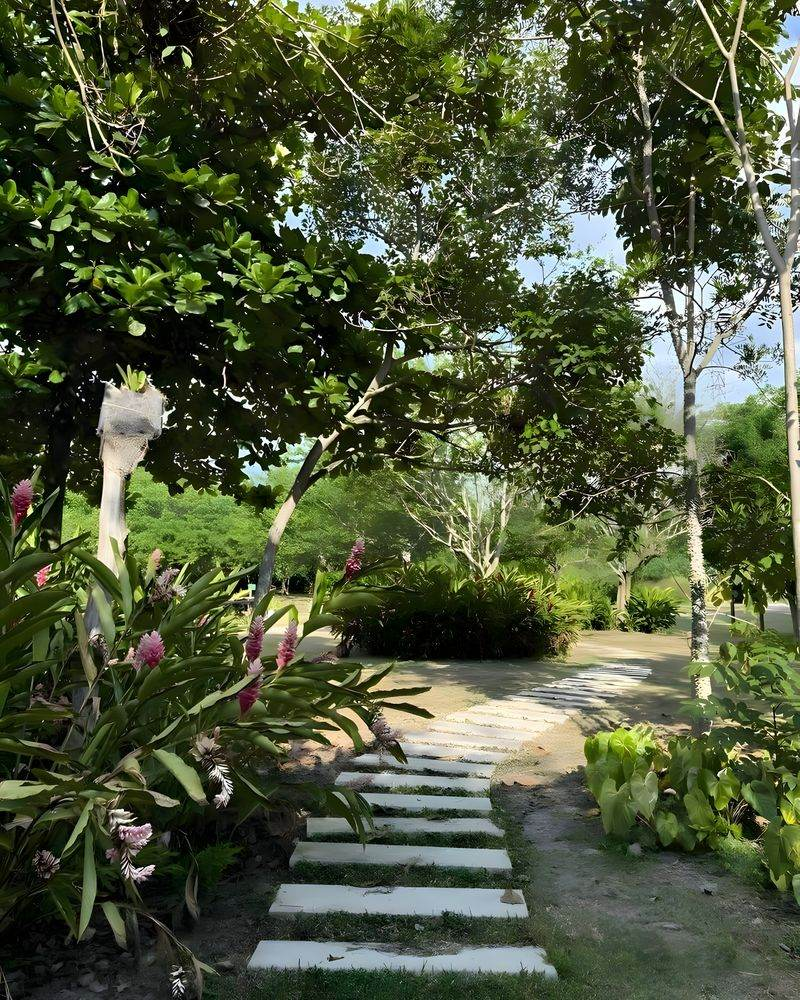
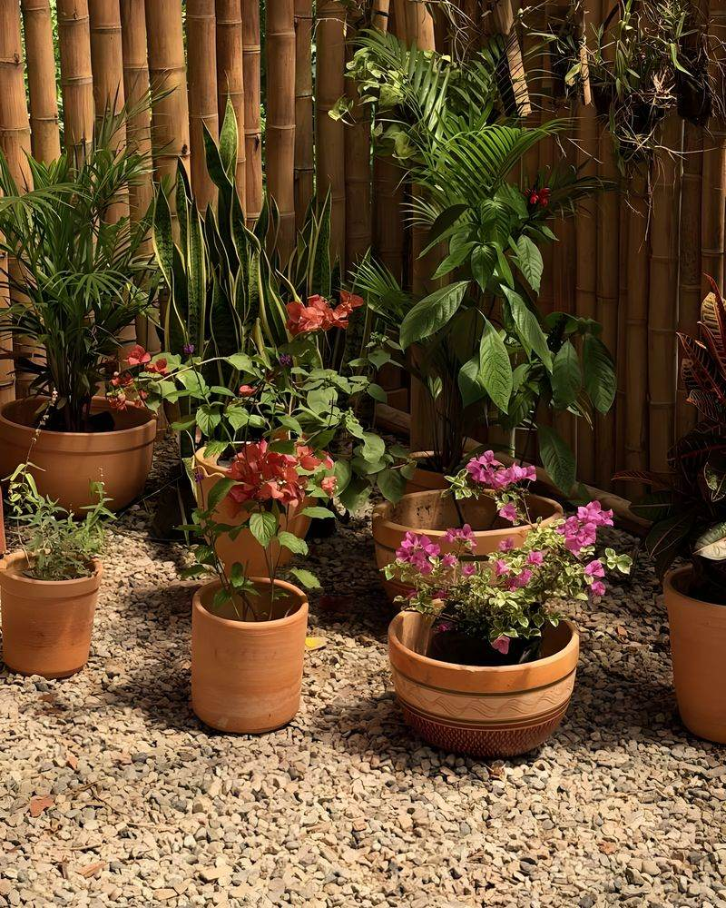
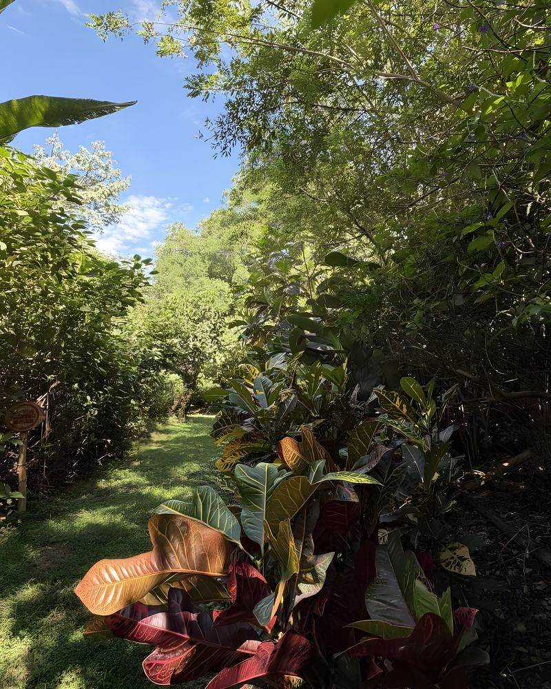
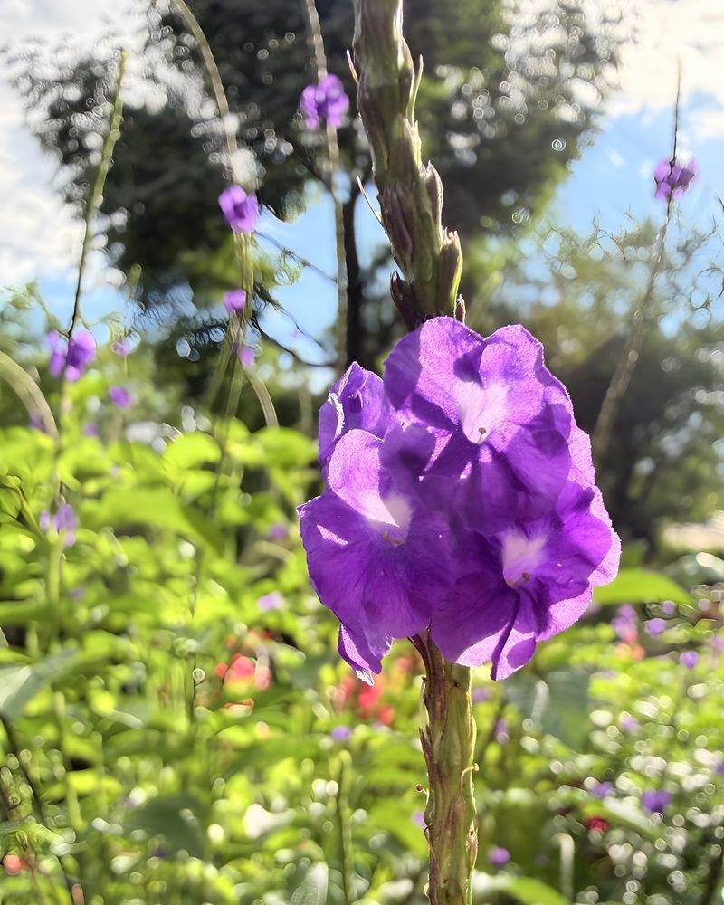
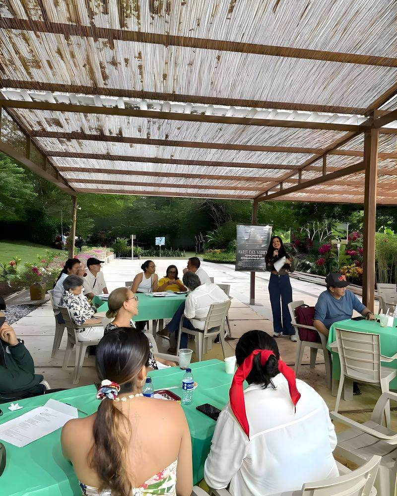
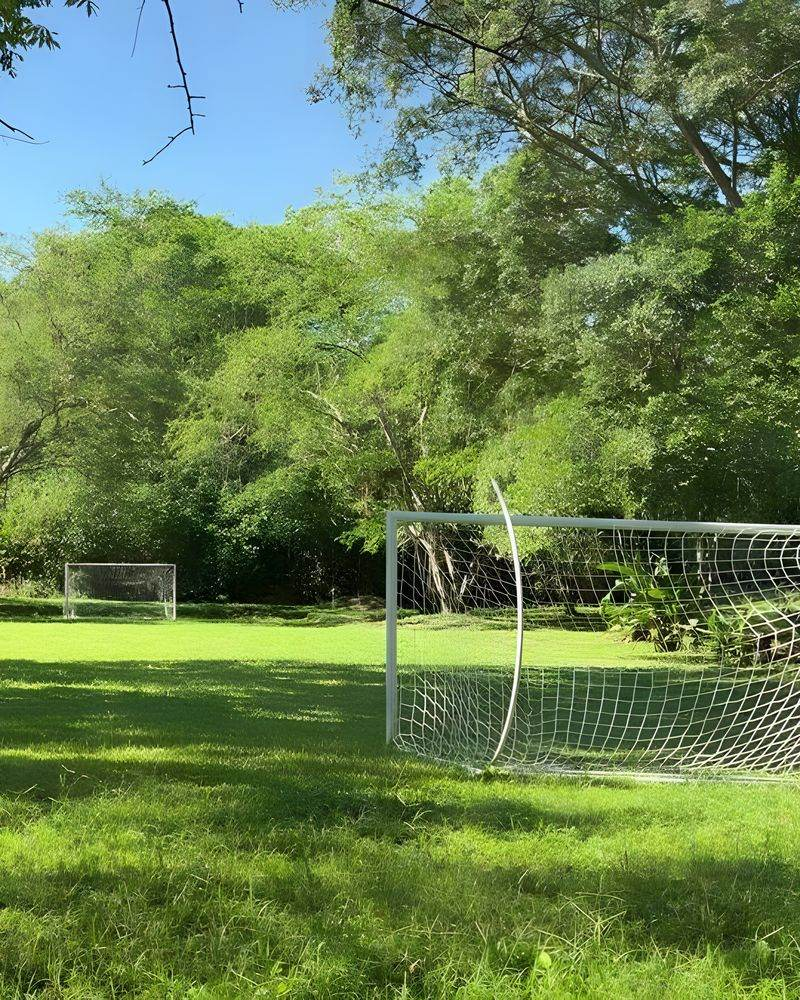

- Alianza Educativa
- Pases por jornadas
- Al aire libre
Salidas escolares Un día de colegio que no cabe en un aula
Bosque vivo para aprender haciendo. El colegio compra un pase por jornadas y trae a su curso a cinco aulas que no tienen paredes.
- 40.000 m² de bosque vivo
- 4 horas dura cada jornada
- 5 aulas vivas, en un solo pase
- 40 estudiantes por jornada
Vegas del Verde · Floridablanca, Santander

Cinco aulas vivas
Todas dentro del pase
Cada jornada las recorre en el orden que el profesor decida.
-

Vivero
Cultivo de plantas nativas y propagación en un vivero que funciona de verdad.
-

Sendero Ecovital
Recorrido ecológico de aprendizaje ambiental por el bosque.
-

Jardín de Polinizadores
Observación de aves y mariposas en su hábitat natural.
-

Terraza cubierta
Sala equipada para talleres, charlas y proyección audiovisual.
-

Cancha de fútbol
Espacio deportivo para actividades recreativas y fútbol formativo, para principiantes.
El colegio aporta el diseño pedagógico y el profesor.
Vegas del Verde no ofrece acompañamiento pedagógico ni binoculares.
Pases por jornada
- Cada pase incluye 40 estudiantes por jornada
- Pago de contado
- Validez de un año
-
Pase Semilla
1 jornada
$400.000
Quiero el Semilla -
Pase Bosque
2 jornadas
$750.000
Quiero el Bosque -
Pase Sede
4 jornadas
$1.400.000
Quiero el Sede
Incluye para los 40 estudiantes: uso del vivero, el sendero, el jardín, el taller y la cancha.
Valores agregados
- Actividad lúdica$8.000 por estudiante
- Refrigerio$12.000 a $18.000 por estudiante
- WiFi de alta velocidad en la zona del tallerincluido
- Parqueaderopago, disponible
- Póliza de responsabilidad civil contra tercerosvigente
- Vigilanciapermanente
Servicio social
Horas de servicio en el bosque
Cuatro opciones para que las horas de servicio social del colegio se hagan en el bosque.
-
Taller de avistamiento de aves
Observación e identificación de especies locales.
-
Guardianes del vivero
Cuidado y mantenimiento del vivero.
-
Guardianes polinizadores
Protección de polinizadores y de sus hábitats.
-
Científicos junior de mariposas
Investigación y registro del ciclo de las mariposas.
Para los colegios que vuelven
Puntos Verdes
El plan de fidelización de la alianza. Cada recarga suma, y a los doce puntos el bosque invita.
- Cada recarga 1 punto
- 12 puntos 1 Pase Semilla gratis
- Vigencia de los puntos 3 meses
- 1
- 2
- 3
- 4
- 5
- 6
- 7
- 8
- 9
- 10
- 11
- Pase Semilla gratis
¿Vienes con un curso?
Cuéntanos el nombre del colegio, qué pase te interesa y la fecha tentativa de la primera jornada, y armamos la ruta del día.
- Nombre del colegio
- Pase
- Fecha tentativa
WhatsApp 316 675 8362
Vereda Río Frío, 500 m por la vía Carabineros desde Mediterráneo, frente al Anillo Vial · Floridablanca, Santander.
La jornada se alarga con los espacios del parque, con el Sendero Ecovital o con una vuelta por el vivero.